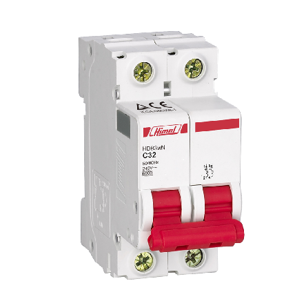

O mini disjuntor é um dispositivo de proteção elétrica projetado para interromper automaticamente o fluxo de corrente em um circuito quando ocorre uma sobrecarga ou curto-circuito. Ele é amplamente utilizado em sistemas elétricos residenciais, comerciais e industriais para proteger os fios e equipamentos contra danos causados por correntes excessivas.
Baixar Ficha Técnica